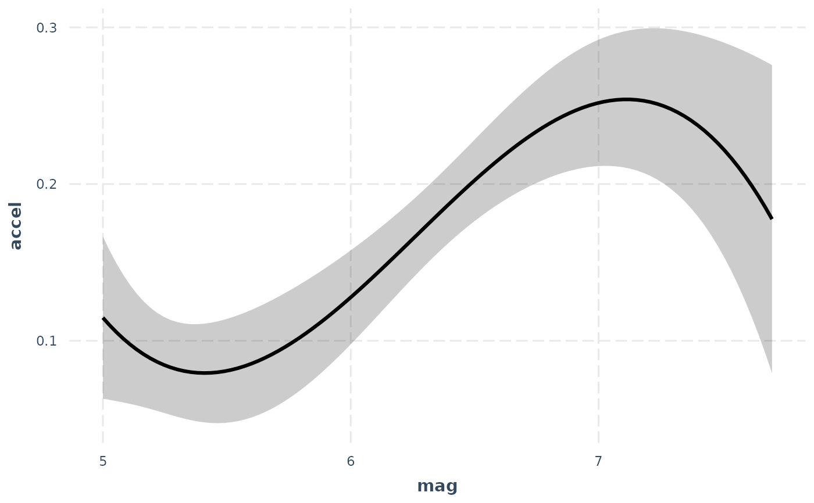
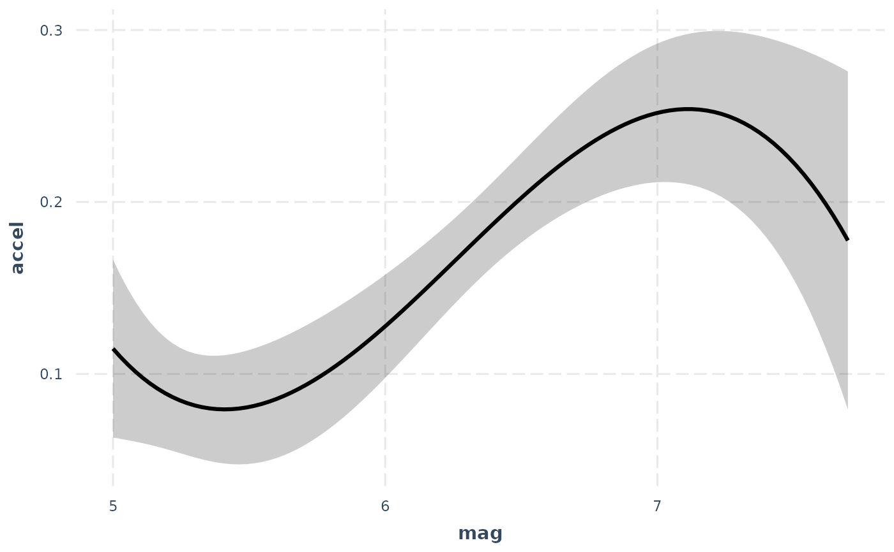

effect_plot() plots regression paths. The plotting is done with
ggplot2 rather than base graphics, which some similar functions use.
effect_plot(
model,
pred,
pred.values = NULL,
centered = "all",
plot.points = FALSE,
interval = FALSE,
data = NULL,
at = NULL,
int.type = c("confidence", "prediction"),
int.width = 0.95,
outcome.scale = "response",
robust = FALSE,
cluster = NULL,
vcov = NULL,
set.offset = 1,
x.label = NULL,
y.label = NULL,
pred.labels = NULL,
main.title = NULL,
colors = "black",
line.thickness = 1.1,
point.size = 1.5,
point.alpha = 0.6,
point.color = "black",
jitter = 0,
rug = FALSE,
rug.sides = "lb",
force.cat = FALSE,
cat.geom = c("point", "line", "bar"),
cat.interval.geom = c("errorbar", "linerange"),
cat.pred.point.size = 3.5,
partial.residuals = FALSE,
color.class = colors,
...
)Arguments
- model
A regression model. The function is tested with
lm,glm,svyglm,merMod,rq,brmsfit,stanregmodels. Models from other classes may work as well but are not officially supported. The model should include the interaction of interest.- pred
The name of the predictor variable involved in the interaction. This can be a bare name or string. Note that it is evaluated using
rlang, so programmers can use the!!syntax to pass variables instead of the verbatim names.- pred.values
Values of
predto use instead of the equi-spaced series by default (for continuous variables) or all unique values (for non-continuous variables).- centered
A vector of quoted variable names that are to be mean-centered. If
"all", all non-focal predictors are centered. You may instead pass a character vector of variables to center. User can also use "none" to base all predictions on variables set at 0. The response variable,pred, weights, and offset variables are never centered.- plot.points
Logical. If
TRUE, plots the actual data points as a scatterplot on top of the interaction lines. The color of the dots will be based on their moderator value.- interval
Logical. If
TRUE, plots confidence/prediction intervals around the line usinggeom_ribbon.- data
Optional, default is NULL. You may provide the data used to fit the model. This can be a better way to get mean values for centering and can be crucial for models with variable transformations in the formula (e.g.,
log(x)) or polynomial terms (e.g.,poly(x, 2)). You will see a warning if the function detects problems that would likely be solved by providing the data with this argument and the function will attempt to retrieve the original data from the global environment.- at
If you want to manually set the values of other variables in the model, do so by providing a named list where the names are the variables and the list values are vectors of the values. This can be useful especially when you are exploring interactions or other conditional predictions.
- int.type
Type of interval to plot. Options are "confidence" or "prediction". Default is confidence interval.
- int.width
How large should the interval be, relative to the standard error? The default, .95, corresponds to roughly 1.96 standard errors and a .05 alpha level for values outside the range. In other words, for a confidence interval, .95 is analogous to a 95% confidence interval.
- outcome.scale
For nonlinear models (i.e., GLMs), should the outcome variable be plotted on the link scale (e.g., log odds for logit models) or the original scale (e.g., predicted probabilities for logit models)? The default is
"response", which is the original scale. For the link scale, which will show straight lines rather than curves, use"link".- robust
Should robust standard errors be used to find confidence intervals for supported models? Default is FALSE, but you should specify the type of sandwich standard errors if you'd like to use them (i.e.,
"HC0","HC1", and so on). IfTRUE, defaults to"HC3"standard errors.- cluster
For clustered standard errors, provide the column name of the cluster variable in the input data frame (as a string). Alternately, provide a vector of clusters.
- vcov
Optional. You may supply the variance-covariance matrix of the coefficients yourself. This is useful if you are using some method for robust standard error calculation not supported by the sandwich package.
- set.offset
For models with an offset (e.g., Poisson models), sets an offset for the predicted values. All predicted values will have the same offset. By default, this is set to 1, which makes the predicted values a proportion. See details for more about offset support.
- x.label
A character object specifying the desired x-axis label. If
NULL, the variable name is used.- y.label
A character object specifying the desired x-axis label. If
NULL, the variable name is used.- pred.labels
A character vector of labels for categorical predictors. If
NULL, the default, the factor labels are used.- main.title
A character object that will be used as an overall title for the plot. If
NULL, no main title is used.- colors
See jtools_colors for details on the types of arguments accepted. Default is "black".
- line.thickness
How thick should the plotted lines be? Default is 1.1; ggplot's default is 1.
- point.size
What size should be used for observed data when
plot.pointsis TRUE? Default is 1.5.- point.alpha
What should the
alphaaesthetic for plotted points of observed data be? Default is 0.6, and it can range from 0 (transparent) to 1 (opaque).- point.color
What should the
colouraesthetic for plotted points of observed data be? Default is "black".- jitter
How much should
plot.pointsobserved values be "jittered" viaggplot2::position_jitter()? When there are many points near each other, jittering moves them a small amount to keep them from totally overlapping. In some cases, though, it can add confusion since it may make points appear to be outside the boundaries of observed values or cause other visual issues. Default is 0, but try various small values (e.g., 0.1) and increase as needed if your points are overlapping too much. If the argument is a vector with two values, then the first is assumed to be the jitter for width and the second for the height.- rug
Show a rug plot in the margins? This uses
ggplot2::geom_rug()to show the distribution of the predictor (top/bottom) and/or response variable (left/right) in the original data. Default is FALSE.- rug.sides
On which sides should rug plots appear? Default is "lb", meaning both left and bottom. "t" and/or "b" show the distribution of the predictor while "l" and/or "r" show the distribution of the response.
- force.cat
Force the continuous
predto be treated as categorical? default is FALSE, but this can be useful for things like dummy 0/1 variables.- cat.geom
If
predis categorical (orforce.catis TRUE), what type of plot should this be? There are several options here since the best way to visualize categorical interactions varies by context. Here are the options:"point": The default. Simply plot the point estimates. You may want to usepoint.shape = TRUEwith this and you should also considerinterval = TRUEto visualize uncertainty."line": This connects observations across levels of thepredvariable with a line. This is a good option when thepredvariable is ordinal (ordered). You may still considerpoint.shape = TRUEandinterval = TRUEis still a good idea."bar": A bar chart. Some call this a "dynamite plot." Many applied researchers advise against this type of plot because it does not represent the distribution of the observed data or the uncertainty of the predictions very well. It is best to at least use theinterval = TRUEargument with this geom.
- cat.interval.geom
For categorical by categorical interactions. One of "errorbar" or "linerange". If the former,
ggplot2::geom_errorbar()is used. If the latter,ggplot2::geom_linerange()is used.- cat.pred.point.size
(for categorical
pred) If TRUE andgeomis"point"or"line", sets the size of the predicted points. Default is 3.5. Note the distinction frompoint.size, which refers to the observed data points.- partial.residuals
Instead of plotting the observed data, you may plot the partial residuals (controlling for the effects of variables besides
pred).- color.class
Deprecated. Now known as
colors.- ...
extra arguments passed to
make_predictions()
Value
The functions returns a ggplot object, which can be treated
like
a user-created plot and expanded upon as such.
Details
This function provides a means for plotting effects for the
purpose of exploring regression estimates. You must have the
package ggplot2 installed to benefit from these plotting functions.
By default, all numeric predictors other than the one specified in the
pred argument are mean-centered, which usually produces more
intuitive plots. This only affects the y-axis in linear models, but
may be especially important/influential in non-linear/generalized linear
models.
This function supports nonlinear and generalized linear models and by
default will plot them on
their original scale (outcome.scale = "response").
While mixed effects models from lme4 are supported, only the fixed
effects are plotted. lme4 does not provide confidence intervals,
so they are not supported with this function either.
Note: to use transformed predictors, e.g., log(x), or polynomials,
e.g., poly(x, 2), provide the raw variable name (x) to the pred =
argument. You will need to input the data frame used to fit the model with
the data = argument.
See also
interact_plot from the interactions package plots interaction
effects,
producing plots like this function but with separate lines for different
levels of a moderator. cat_plot from interactions does the same
for categorical by categorical interactions.
Examples
# Using a fitted lm model
states <- as.data.frame(state.x77)
states$HSGrad <- states$`HS Grad`
fit <- lm(Income ~ HSGrad + Murder,
data = states)
effect_plot(model = fit, pred = Murder)
 # Using polynomial predictor, plus intervals
fit <- lm(accel ~ poly(mag,3) + dist, data = attenu)
effect_plot(fit, pred = mag, interval = TRUE,
int.type = "confidence", int.width = .8, data = attenu) # note data arg.

# With svyglm
if (requireNamespace("survey")) {
library(survey)
data(api)
dstrat <- svydesign(id = ~1, strata = ~stype, weights = ~pw,
data = apistrat, fpc = ~fpc)
regmodel <- svyglm(api00 ~ ell + meals, design = dstrat)
effect_plot(regmodel, pred = ell, interval = TRUE)
}
# Using polynomial predictor, plus intervals
fit <- lm(accel ~ poly(mag,3) + dist, data = attenu)
effect_plot(fit, pred = mag, interval = TRUE,
int.type = "confidence", int.width = .8, data = attenu) # note data arg.

# With svyglm
if (requireNamespace("survey")) {
library(survey)
data(api)
dstrat <- svydesign(id = ~1, strata = ~stype, weights = ~pw,
data = apistrat, fpc = ~fpc)
regmodel <- svyglm(api00 ~ ell + meals, design = dstrat)
effect_plot(regmodel, pred = ell, interval = TRUE)
}
 # With lme4
if (FALSE) {
library(lme4)
data(VerbAgg)
mv <- glmer(r2 ~ Anger + mode + (1 | item), data = VerbAgg,
family = binomial,
control = glmerControl("bobyqa"))
effect_plot(mv, pred = Anger)
}
# With lme4
if (FALSE) {
library(lme4)
data(VerbAgg)
mv <- glmer(r2 ~ Anger + mode + (1 | item), data = VerbAgg,
family = binomial,
control = glmerControl("bobyqa"))
effect_plot(mv, pred = Anger)
}